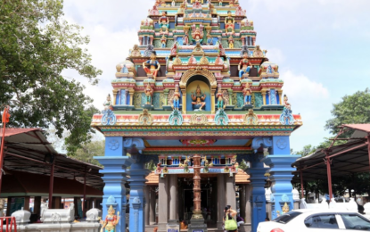
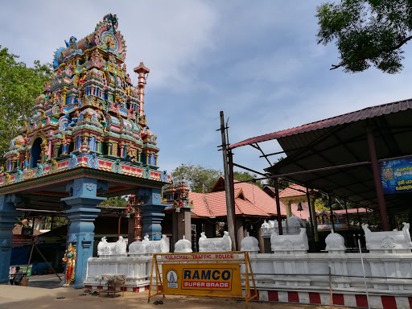

<html>
<head>
<title>Mandaikadu tourist place</title>
<link rel="icon" type="image/x-icon" href="icon1.png">
<style>
        ul.a{
                list-style-type: none;
                margin: 0%;
                padding: 0%;
                background-color: rgb(241, 3, 241);
            }      
            li.b{float: left;}
            li a{text-decoration: none;
                color:rgb(17, 11, 11);
                text-align: center;
                padding: 14px 16px;
                background-color:rgb(255, 255, 255);
            }
            li a:hover:not(.active){background-color: rgb(255, 87, 191);} 
            .active{background-color: rgb(8, 8, 8);}
</style>
</html>
<center><h1><u>MANDAIKADU AMMAN TEMPLE</u></h1></center>
<ul class="a">
    <li class="b"><a href="tourist places.html">Home</a></li>
    <li class="b"><a href="cab registration.html">Cab Booking</a></li>
    <li class="b"><a>Hotels</a></li>
    <li class="b"><a href="about us.html">About Us</a></li>
</ul><br><br>
<center>
    
    
</center>
<h3>ABOUT:</h3>
<p>&nbsp&nbsp&nbspMandaikadu Bhagavathi Temple, previously Mondaicaud Bhagavathi Temple, is a renowned temple near Colachel in Kanyakumari District, Tamil Nadu. Built in Kerala's traditional temple architectural-style, it lies near the seashore. A unique feature of this temple is its' presiding deity - an ant hill with five heads, standing at a tall 15 feet. The local belief is that the ant hill grows gradually. It is also referred to as 'Women's Sabarimala'.

The main festival celebrated here is the Kodaivazha, during the month of Masi.</p>
<h3>TIMINGS:</h3>
<ul>
    <li>4am to 12:30pm</li>
    <li>5pm to 8:30pm</li>
</ul>
<h3>LOCATION:</h3>
<a href="https://www.google.com/maps/place/Mandaikadu,+Tamil+Nadu+629252/@8.1661307,77.2764901,15.65z/data=!4m5!3m4!1s0x3b04f903ef04292b:0x1e89ced74a02490d!8m2!3d8.1631117!4d77.2785876">Click here for directons</a>
</body>
</html>